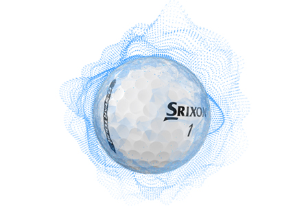
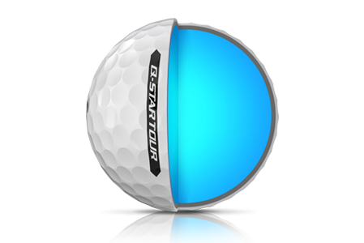
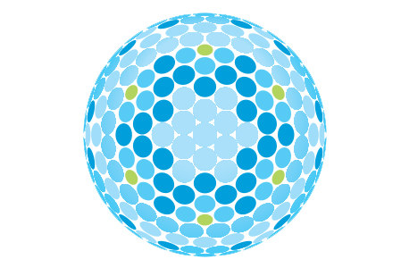

Q-Star Tour Golf Balls
Now in its third generation, the new Srixon Q-STAR TOUR is our softest golf ball with tour-level performance. Get tour-calibre spin and distance from its three-piece construction and urethane cover, along with exceptionally softer feel than traditional tour balls.
TECHNOLOGY
Fastlayer core
The new FastLayer Core offers distance and soft feel without compromise due to a gradual transition from soft inner core to firm outer edge.
SpinSkin with SeRM
A new urethane coating with flexible molecular bonds digs deep into wedge and iron grooves for increased friction and maximum spin.
Alignment Aid
New side stamping aids in alignment when standing over those critical putts.
338 Speed Dimple Pattern
Providing a penetrating ball flight in any conditions, the optimal dimple design increases lift and reduces drag to maximize distance.
Q-Star Tour Specs
| CONSTRUCTION | 2pc |
| COVER MATERIAL | Urethane |
| AVAILABLE COLORS | Pure White & Tour Yellow |
SRIXON Z-STAR XV PRICE
40 € / 44 CHF / 419 SEK / 35,50 £